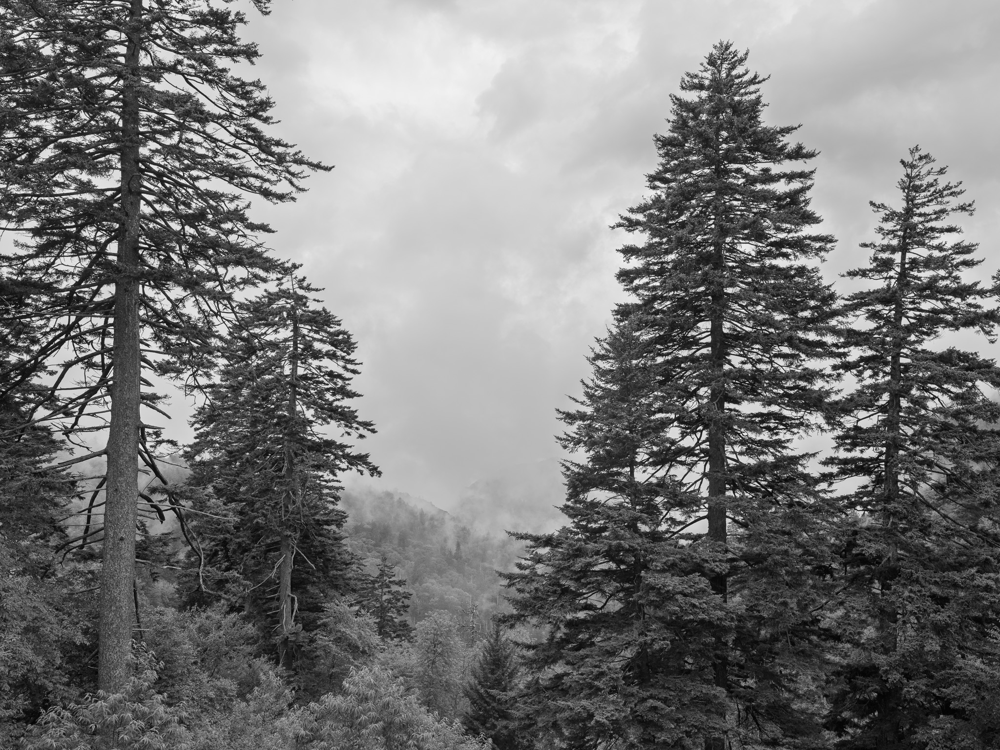
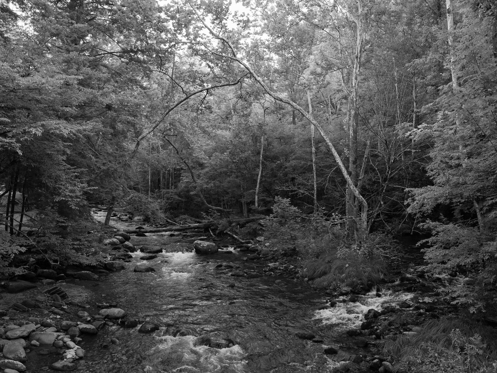
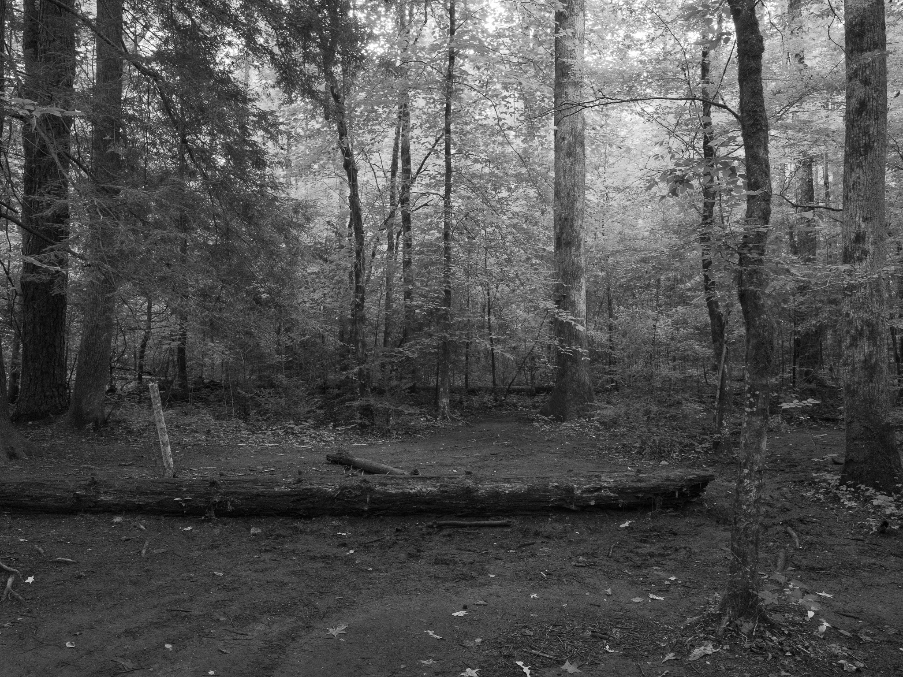
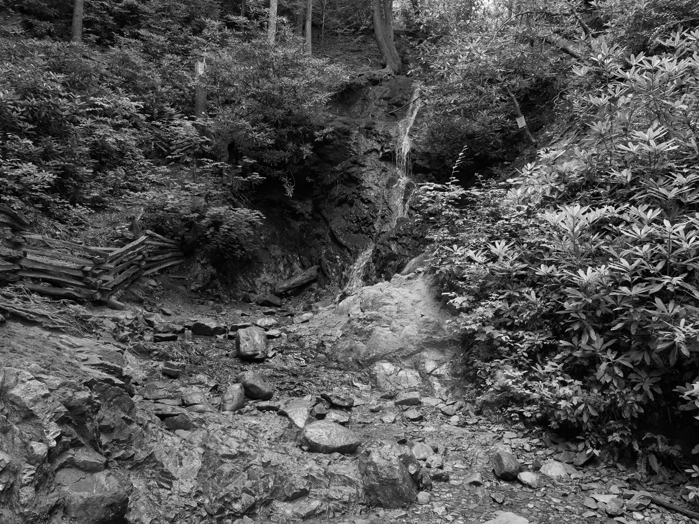
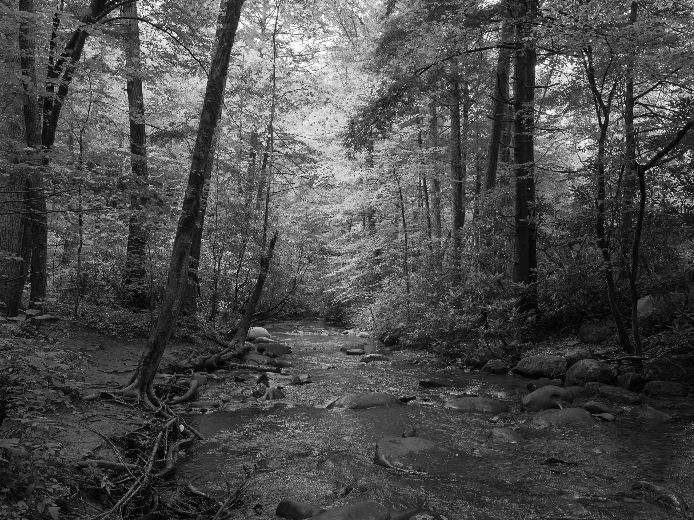
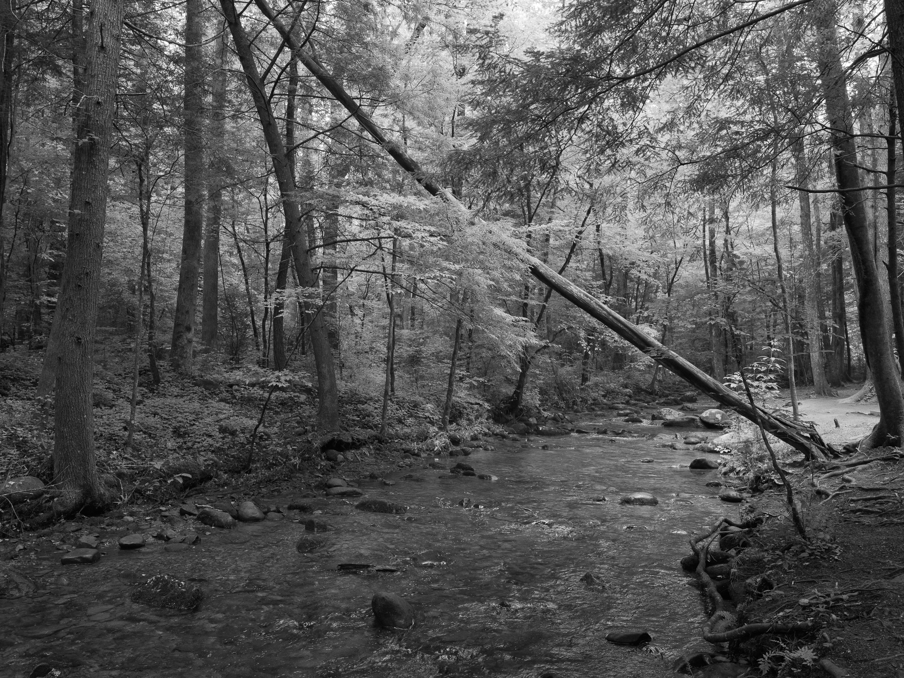
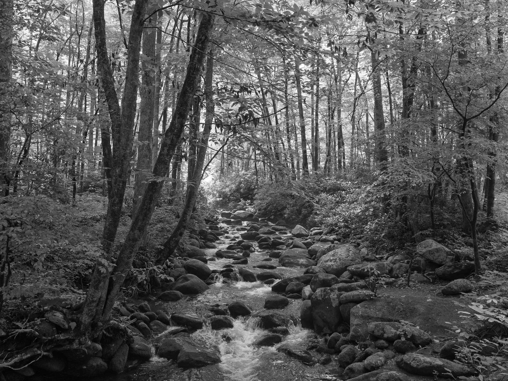
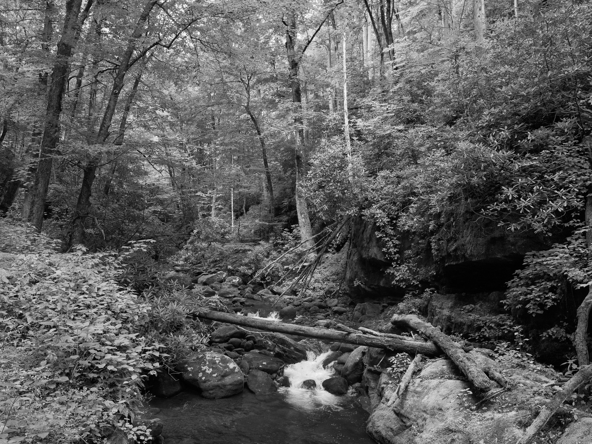

A 522,427-acre national park, about 95 percent forested, created after industrial logging that began in 1901 had clear-cut much of the land.








These photographs are in the public domain (CC0 1.0). No permission is required. No credit is required.
Optional credit line: Public Lands Institute, publiclandsinstitute.net/sites/great-smoky-mountains-national-park.html
To tell PLI where an image was used, write to contact@publiclandsinstitute.net.